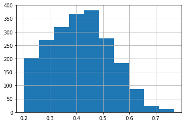

import pandas as pd
import random
from functools import partial
import math
import os
import tqdm
import numpy as np
#import bamboolib as bam
import sklearn
from matplotlib import pyplot
import seaborn as sns
from sklearn import metrics
from sklearn.neighbors import NearestNeighbors
from matplotlib import pyplot as plt
from kneed import KneeLocator
import scipy
import plotly.express as px
import networkx as nx
import networkx.algorithms.community as nx_comm
from ipysigma import Sigma
import community as community_louvain
import matplotlib.cm as cm
import igraph as ig
Chargement et préparation des données#
aymeric = "/home/aymeric/python-scripts/anses_medialab/datas" #aymeric
jp = 'd:/Projects/Medialab/Anses/' # Jean Philippe
path= aymeric
tfidf='tfidf'
#domain='media'
#domain='twitter'
#domain='facebook'
index_file_JP="indexation_results/index_alldefault_nameexhaustive_aymeric.csv"
index_file_AL=f"index_alldefault_nameexhaustive_aymeric.csv"
term_specific ="list_100_term_chi2.csv"
index_file=f"{path}/{index_file_AL}"
index_file
'/home/aymeric/python-scripts/anses_medialab/datas/index_alldefault_nameexhaustive_aymeric.csv'
df=pd.read_csv(index_file, sep='\t', dtype={"doc_id" :"string", "sent_id": "string"})
specific_term = pd.read_csv(f"{path}/{term_specific}", sep=',')
specific_term = specific_term.drop(columns=["Unnamed: 2"])
list_periods = pd.read_csv(f'{path}/analyse_periods/list_periods_all_sources.csv', sep=',')
df['date'] = pd.to_datetime(df['date'], infer_datetime_format=True)
df['yearmonth']=(df['date'].dt.strftime('%Y-%m'))
df=df[~df['yearmonth'].isin(['2008-04', '2010-01','2021-02'])]
df=df.dropna(subset=['yearmonth'])
len(df)
7832372
df0 = df.drop_duplicates()
df0 = df0.merge(list_periods, on = ["origin", "yearmonth"], how= "left")
Fréquence des termes par documents (sur facebook)#
df0["doc_sent_id"] = df0["doc_id"]+"_"+df0["sent_id"]
l = []
if l is Null:
| term | doc_id | sent_id | origin | source | date | yearmonth | P_twitter | P_media | P_facebook | doc_sent_id | |
|---|---|---|---|---|---|---|---|---|---|---|---|
| 0 | glyphosate | 707244725942747136 | 1 | Titrespresse.com | 2016-03-08 | 2016-03 | 4.0 | 8.0 | 6.0 | 707244725942747136_1 | |
| 1 | europe | 707244725942747136 | 1 | Titrespresse.com | 2016-03-08 | 2016-03 | 4.0 | 8.0 | 6.0 | 707244725942747136_1 | |
| 2 | pesticides | 1396436134209720320 | 0 | ChachaP | 2021-05-23 | 2021-05 | 7.0 | 10.0 | 11.0 | 1396436134209720320_0 | |
| 3 | herbicide | 1396436134209720320 | 0 | ChachaP | 2021-05-23 | 2021-05 | 7.0 | 10.0 | 11.0 | 1396436134209720320_0 | |
| 4 | glyphosate | 1396436134209720320 | 0 | ChachaP | 2021-05-23 | 2021-05 | 7.0 | 10.0 | 11.0 | 1396436134209720320_0 | |
| ... | ... | ... | ... | ... | ... | ... | ... | ... | ... | ... | ... |
| 3836926 | sortie | 968101561401561088 | 0 | RiskAssur/Notre-Siecle/PereLaFouine | 2018-02-26 | 2018-02 | 5.0 | 8.0 | 7.0 | 968101561401561088_0 | |
| 3836927 | sortie du glyphosate | 968101561401561088 | 0 | RiskAssur/Notre-Siecle/PereLaFouine | 2018-02-26 | 2018-02 | 5.0 | 8.0 | 7.0 | 968101561401561088_0 | |
| 3836928 | glyphosate | 968101561401561088 | 0 | RiskAssur/Notre-Siecle/PereLaFouine | 2018-02-26 | 2018-02 | 5.0 | 8.0 | 7.0 | 968101561401561088_0 | |
| 3836929 | nicolas hulot | 968101561401561088 | 0 | RiskAssur/Notre-Siecle/PereLaFouine | 2018-02-26 | 2018-02 | 5.0 | 8.0 | 7.0 | 968101561401561088_0 | |
| 3836930 | hulot | 968101561401561088 | 0 | RiskAssur/Notre-Siecle/PereLaFouine | 2018-02-26 | 2018-02 | 5.0 | 8.0 | 7.0 | 968101561401561088_0 |
3836931 rows × 11 columns
def term_doc_freq(data, name_period, origin, period, what, targeted_terms, N):
df_p = data.loc[(data["origin"]== origin) & (data[name_period]== period)]
if len(targeted_terms) > 0:
doc_with_targeted_terms = df_p.loc[df_p["term"].isin(targeted_terms)]
doc_with_glypho = glypho["doc_id"].to_list()
df_p = df_p.merge(doc_with_targeted_terms[["doc_id"]], on = ["doc_id"], how = "inner")
else:
pass
if origin == "facebook":
# Step: Keep rows where origin is one of: facebook
specific_term_origin = specific_term.loc[(specific_term['origin'] == 'facebook') &
(specific_term["P"] == period)]
specific_term_origin = specific_term_origin.sort_values(by=['chi2'], ascending=[False]).reset_index().head(N)
topN = specific_term_origin["term"]
elif origin == "media":
specific_term_origin = specific_term.loc[(specific_term['origin'] == 'media') &
(specific_term["P"] == period)]
specific_term_origin = specific_term_origin.sort_values(by=['chi2'], ascending=[False]).reset_index().head(N)
topN = specific_term_origin["term"]
elif origin == "twitter":
specific_term_origin = specific_term.loc[(specific_term['origin'] == 'twitter') &
(specific_term["P"] == period)]
specific_term_origin = specific_term_origin.sort_values(by=['chi2'], ascending=[False]).reset_index().head(N)
topN = specific_term_origin["term"]
#topN = df_p["term"].value_counts().index[:N]
df_p=df_p.loc[(df_p["origin"]==origin) & (df_p["term"].isin(topN))]
df_term_freq = df_p.groupby(['term', what]).agg(freq=('sent_id', 'size')).reset_index()
return df_term_freq
def term_doc_freq(data, name_period, origin, period, what, targeted_terms, N):
df_p = data.loc[(data["origin"]== origin)]# & (data[name_period]<= period)]
if len(targeted_terms) > 0:
doc_with_targeted_terms = df_p.loc[df_p["term"].isin(targeted_terms)]
doc_with_glypho = glypho["doc_id"].to_list()
df_p = df_p.merge(doc_with_targeted_terms[["doc_id"]], on = ["doc_id"], how = "inner")
else:
pass
topN=df_p["term"].value_counts().index[:N]
#topN = df_p["term"].value_counts().index[:N]
df_p=df_p.loc[(df_p["term"].isin(topN))]
df_term_freq = df_p.groupby(['term', what]).agg(freq=('sent_id', 'size')).reset_index()
return df_term_freq
Création de la matrice termes-termes#
multiplication de la matrice documents-termes par sa transposée
def create_term_term_matrix(data, what):
table = pd.pivot_table(data,
values='freq', index=[what],columns=["term"], aggfunc=np.sum, fill_value=0, observed = True)
term_term = np.dot(table.T, table) # multiplication de la transposé de
return term_term, table
def mutual_information_matrix(matrix): # a term_term matrix
mi_matrix = []
#freq_term = [x for x in matrix.diagonal()] # pour obtenir la fréquence de chaque terme (somme de chaque ligne)
freq_term = np.sum(matrix,axis=1).tolist() - matrix.diagonal()
#Nombre de paires est égale à la somme des lignes moins la diagonale (à diviser par 2?)
#Nb_pairs = (sum(np.sum(matrix,axis=1).tolist()) - sum(freq_term))/2
Nb_pairs = sum(freq_term)
for i in range(len(matrix)):
list_mi = []
for j in range(len(matrix)):
nb_cooc = matrix[i,j] #nombre de cooccurrences des termes i et j
freq_i = freq_term[i] # fréquence de i
freq_j = freq_term[j] # fréquence de j
if i == j :
mutual_info = 0
else:
if nb_cooc == 0 :
mutual_info = 0
else: #calcule mutual information
num = (nb_cooc*Nb_pairs)
denom = freq_i*freq_j
mutual_info = np.log(num/denom)
if mutual_info < 0:
mutual_info = 0
list_mi.append(mutual_info)
mi_matrix.append(list_mi)
return mi_matrix
mi_matrix = []
freq_term = np.sum(term_term,axis=1).tolist() - term_term.diagonal() # pour obtenir la fréquence de chaque terme (somme de chaque ligne)
#Nombre de paires est égale à la somme des lignes moins la diagonale (à diviser par 2?)
freq_term
Nb_pairs
---------------------------------------------------------------------------
NameError Traceback (most recent call last)
/tmp/ipykernel_13694/406267054.py in <module>
1 mi_matrix = []
----> 2 freq_term = np.sum(term_term,axis=1).tolist() - term_term.diagonal() # pour obtenir la fréquence de chaque terme (somme de chaque ligne)
3 #Nombre de paires est égale à la somme des lignes moins la diagonale (à diviser par 2?)
4
5 freq_term
NameError: name 'term_term' is not defined
Calcule du cosine#
def find_k_neighbor(mi_matrix, precompute):
mi_array = np.array(mi_matrix)
if precompute == True:
m =scipy.sparse.csc_matrix(mi_array)
dist=metrics.pairwise.cosine_distances(m)
list_voisin = []
list_voisin_dist =[]
samples = dist, x
neigh = NearestNeighbors(n_neighbors=6, metric='precomputed')
neigh.fit(samples)
for x in range(len(dist)):
voisins = neigh.kneighbors(dist[[x]], return_distance=True)
voisins_dist = voisins[0].tolist()
voisins_id = voisins[1].tolist()
#print(voisins_id)
list_voisin.append(voisins_id[0])
list_voisin_dist.append(voisins_dist[0])
else:
list_voisin = []
list_voisin_dist =[]
samples = mi_array
neigh = NearestNeighbors(n_neighbors=6, metric='cosine')
neigh.fit(samples)
for x in range(len(mi_array)):
voisins = neigh.kneighbors(mi_array[[x]], return_distance=True)
voisins_dist = voisins[0].tolist()
voisins_id = voisins[1].tolist()
#print(voisins_id)
list_voisin.append(voisins_id[0])
list_voisin_dist.append(voisins_dist[0])
return list_voisin, list_voisin_dist
def matrix_to_df(list_voisin, list_voisin_dist, table):
df_dist = pd.DataFrame(list_voisin_dist)
df_dist["term"] = table.columns
df_dist["id"] = df_dist.index
list_id = []
list_term = []
list_voisins_dist =[]
for x, term in enumerate(df_dist["term"]):
for col in df_dist.columns[0:-2]:
list_id.append(x)
list_term.append(term)
neig_dist = df_dist[col].iloc[x]
list_voisins_dist.append(neig_dist)
data = {"id": list_id, "term": list_term, "distances":list_voisins_dist}
df_dist_voisin = pd.DataFrame(data)#dtype={"id" :"string"})
df_dist_voisin["row_id"] = df_dist_voisin.index #.astype('str')
df_dist_voisin = df_dist_voisin.astype({"id": str, "row_id": str})
df_voisin = pd.DataFrame(list_voisin)
df_voisin["term"] = table.columns
df_voisin["id"] = df_voisin.index
list_id = []
list_term = []
list_voisins =[]
for x, term in enumerate(df_voisin["term"]):
for col in df_voisin.columns[0:-2]:
list_id.append(x)
list_term.append(term)
neig = df_voisin[col].iloc[x]
list_voisins.append(neig)
data = {"id": list_id, "term": list_term, "voisins":list_voisins}
df_voisin = pd.DataFrame(data)
df_voisin["row_id"] = df_voisin.index
df_voisin = df_voisin.astype({"id": str, "row_id": str, "voisins" : str})
df_voisin = df_voisin.merge(df_dist_voisin, on=["row_id", "term", "id"], how = "left")
df_id = df_voisin[["id", "term"]].drop_duplicates()
df_id["voisins"] = df_id["id"].astype('str')
df_id = df_id.astype({"voisins": str, "id": str})
df_voisin = df_voisin.merge(df_id, on=["voisins"], how ="left")
df_voisin = df_voisin.drop(columns=["voisins"])
df_voisin["id_x"] = "id_"+df_voisin["id_x"]
df_voisin["id_y"] = "id_"+df_voisin["id_y"]
df_voisin["row_id"] = "row_id_"+df_voisin["row_id"]
df_voisin = df_voisin.loc[df_voisin["term_x"]!=df_voisin["term_y"]]
return df_voisin
df_term_freq = term_doc_freq(data = df0, origin = "twitter",
name_period = "P_twitter", period = 7,
what = "doc_id", targeted_terms = [],
N = 1000)
---------------------------------------------------------------------------
NameError Traceback (most recent call last)
/tmp/ipykernel_13694/220138478.py in <module>
----> 1 df_term_freq = term_doc_freq(data = df0, origin = "twitter",
2 name_period = "P_twitter", period = 7,
3 what = "doc_id", targeted_terms = [],
4 N = 1000)
NameError: name 'df0' is not defined
term_term, table = create_term_term_matrix(data = df_term_freq, what ="doc_id")
mi_matrix = mutual_information_matrix(matrix= term_term)
list_voisin, list_voisin_dist = find_k_neighbor(mi_matrix = mi_matrix, precompute = "True")
df_voisin = matrix_to_df(list_voisin, list_voisin_dist, table)
#df_voisin.to_csv(f"{path}/analyse_periods/5_plus_proche_voisins_periode_0_fb.csv", sep =",")
df_voisin0 = df_voisin[["term_x", "term_y", "distances"]].loc[df_voisin["distances"]>= 0.2]
df_voisin0.distances.hist()
<AxesSubplot:>

G = nx.from_pandas_edgelist(df_voisin0, 'term_x', 'term_y', ['distances'])
#first compute the best partition
partition = community_louvain.best_partition(G, weight = "distances",resolution=2)
list_communities = [partition[x] for x in partition]
set(list_communities)
{0, 1, 2, 3, 4, 5, 6, 7, 8, 9, 10, 11, 12, 13, 14, 15, 16, 17, 18, 19, 20}
value = {i for i in partition if partition[i]==0}
value
{'% des échantillons',
'@genefutures',
'allemagne',
'ania',
'animal',
'autorité',
'concentration maximale admissible',
'concentration supérieure',
'consommateurs',
'contrôle',
'fipronil',
'futures',
'génération',
'générations futures',
'industrie alimentaire',
'limite',
'limite réglementaire',
'limites maximales',
'liste des produits',
'lmr',
"oxyde d'éthylène",
'résidus',
'résidus de pesticides',
'substance toxique',
'traces',
'traces de fipronil',
'ufc-que',
'élevage',
'œuf'}
nx.set_node_attributes(G, partition, 'louvain')
Sigma(G, node_size = G.degree, node_color = partition)
Sigma(G, node_size = G.degree, node_color = partition)